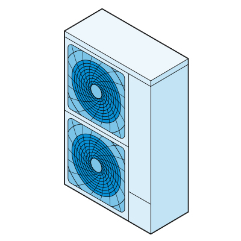
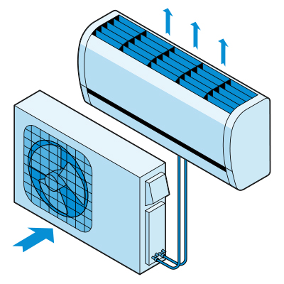

+38 (067) -367-91-99
+38 (067) -182-71-77
+38 (067) -367-91-99
+38 (067) -182-71-77
Несмотря на свое название, тепловые насосы делают намного больше, чем нагрев помещения. Они также обеспечивают кондиционирование воздуха и контроль влажности. Во время отопительного сезона тепловой насос перемещает тепло из окружающей среды в ваш дом, а в течение теплого сезона он переносит тепло из Вашего дома на улицу. Тепловые насосы двигают тепло, а не генерируют его, поэтому они могут нагревать и охлаждать значительно дешевле, чем другие системы, такие как печи и центральные кондиционеры.
Системы с воздушным источником являются наиболее часто устанавливаемыми тепловыми насосами. Они имеют две части: внутренний блок (воздушный погрузчик) и наружный блок (тепловой насос). Хладагент, который циркулирует между двумя агрегатами через трубу, поглощает и выделяет тепло при движении вперед и назад.
Новые тепловые насосы с воздушным потоком могут снизить затраты на отопление примерно на 50 % по сравнению с электрическими печами и плитками. Они также обеспыливают лучше, чем стандартные центральные кондиционеры, поэтому Ваш дом будет более комфортным в более теплые, долгие месяцы.
В прошлом воздушные тепловые насосы были более подходящими для более теплого климата. Но в последние годы технология улучшилась, поэтому они теперь пригодны для более холодных регионов. Вам понадобится дополнительная система отопления, если температура в вашей области опускается от -3 градусов до -12 градусов.
Тепловые насосы с бесступенчатым распределением имеют два блока: наружный компрессор / конденсатор и от одного до четырех воздуховодов. Тихие внутренние блоки устанавливаются высоко на стене или на потолке и управляются с помощью пульта дистанционного управления. Система циркулирует хладагентом через трубу, которая соединяет внутренние и наружные блоки.
Системы с раздельными воздуховодами не требуют воздуховодов, поэтому они практичны для однокомнатных квартир или для домов без воздуховодов. Такие насосы также предотвращают потери энергии, связанные с воздуховодом, на которые может приходиться более 30% потребления энергии дома для кондиционирования.
Геотермальные тепловые насосы направляют тепло через ряд трубок, закрепленных вертикально или горизонтально в окружающей среде. Трубы содержат водный раствор, который нагревается постоянной температурой 10-15 градусов по Цельсию. Такая температура окружающей среды обеспечивается землей, прудом или колодцем и циркулирует в Вашем доме.
Геотермальные тепловые насосы, которые также контролируют влажность, могут снизить энергопотребление Вашего дома на 25-50% по сравнению с традиционной системой отопления и охлаждения. Кроме того, они тихие, долговечные (внутренние устройства длится около 25 лет и петли около 50 лет), требуют небольшого обслуживания и эффективны в экстремальных климатических условиях.
Размер также важен. Если тепловой насос слишком большой, он не будет эффективно нагреваться или охлаждаться и увеличит ваши счета за электроэнергию.
Тепловой насос также не будет работать, или обеспечивать экономию энергии, если только ваш дом не будет эффективен. Итак, прежде чем покупать тепловой насос, нужно:
Перед установкой следует определить правильный размер и правильный продукт для Вашего дома и климата.